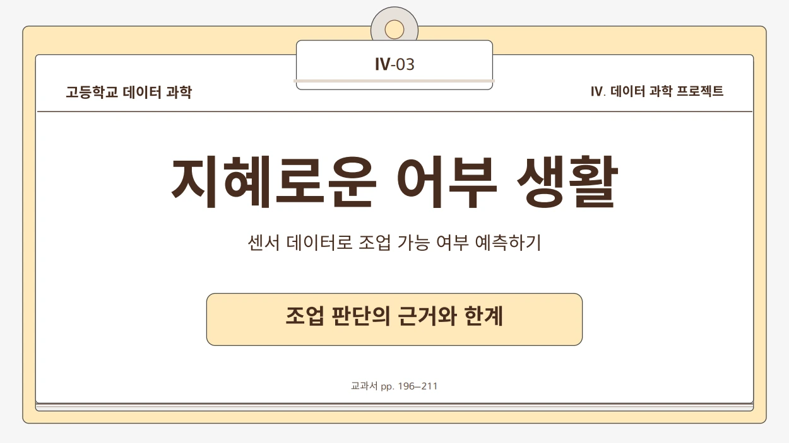

데이터 과학 프로젝트 · 조업 예측
지혜로운
어부 생활
해상 부표가 측정한 수온·파고·풍속·기압을 활용해 조업 가능 여부를 분류합니다. 세 모델의 정확도와 오판을 비교하고, 실제 판단에 적용할 때의 한계를 살펴봅니다.

조업 예측 프로젝트의 여섯 단계
- 문제 정의조업 가능 여부를 이진 분류로 정의
- 데이터 수집해상 부표 관측 CSV의 구조 확인
- 전처리·탐색결측치, 분포, 이상치 확인
- 모델링로지스틱 회귀, SVM, 랜덤 포레스트 학습
- 모델 평가정확도와 혼동행렬로 오판 비교
- 모델 활용센서값을 입력해 결과와 한계 해석
실제 출항 여부는 모델 예측만으로 결정하지 않습니다. 공식 해상예보·특보와 현장 안전 기준을 우선합니다.